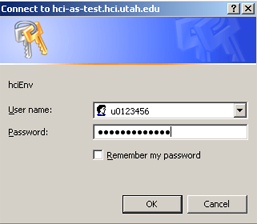
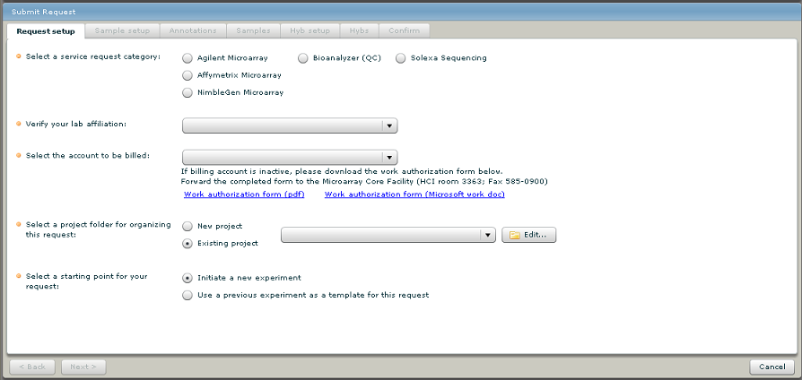
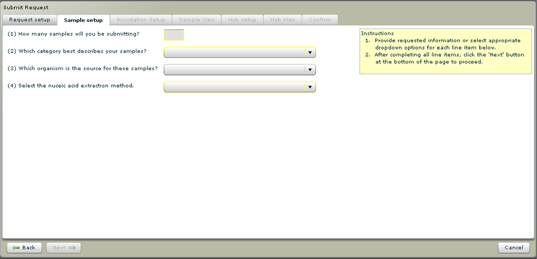

Microarray and Genomic Analysis Core Facility
The Microarray and Genomic Analysis Core Facility uses a web-based ordering system named GNomEx (Genomic Experiment
Data Repository and Core LIMS),
a software solution that documents information about microarray and signature sequencing experimental parameters.
GNomEx serves as both a data repository and as a laboratory information management system that records
information relevant to all steps of the experimental process. Functionality of this software includes
management of client and lab group information, ability for researchers to electronically submit
and annotate experimental requests, workflow tracking of experimental processes, organization and distribution
of experiment results and associated analysis,
and electronic invoicing and billing capabilities.

For university faculty, staff, and students, use the Univ of Utah user id (uNID) and password to login to GNomEx.
Core Facility Services and Pricing
The Microarray and Genomic Analysis Core Facility provides access to the Affymetrix and Agilent Technologies microarray platforms
and an Illumina Genome Analyzer, which enables massively parallel DNA sequencing. Together these technologies offer
investigators a diverse set of tools to measure, gene, exon, or small RNA expression, SNP/CNV and DNA copy number profiling,
location analysis of DNA binding proteins, DNA methylation status, and the sequencing of genomic DNA or resequencing of targeted regions of DNA.
The resource is operated as a full service facility that provides experimental handling of all aspects of the Agilent and Affymetrix microarray
and of the Illumina sequencing processes. These services include evaluation of nucleic acid sample quality, labeling of samples with modified
nucleotides (ch dyes or biotin), microarray hybridization, microarray scanning, feature extraction and annotation of scanned images,
Illumina sequencing library preparation, Illumina cluster generation and sequencing of prepared libraries on an Illumina Genome Analyzer.
The Bioinformatics Core Facility provides support for additional analysis of data generated by the facility.
Affymetrix Microarray
Agilent Microarray
Illumina Sequencing
Sample Quality
GNomEx System Requirements
GNomEx is a web-based application that will run in a web-browser.
It requires the Adobe Flash player. If you do not have this installed,
click here to download Adobe Flash Player.
Please make sure that your browser allows popups to the site https://bioserver.hci.utah.edu/gnomex. Also, please register this site as a trusted site.
Logging in to GNomEx
Your login to GNomEx is your uNID. This is a "u" followed by the last
7 digits of your university employee id number, for example "u0123456".
If you've never used your uNID before, click here to activate your uNID account.
Note for first-time GNomEx users: Your uNID
must be registered in GNomEx before you can use the system.
Please
click here to request a GNomEx login.
Once you have been registered, launch GNomEx.
Enter your uNID and password on
the GNomEx login page to log in.

New Experiment Requests
To submit an experiment request, click on the "Submit Request" link from the navigation bar.
Request Setup
Verify your lab and pick the account to be billed. Then choose the kind of request and select a project or create a new project.
(Projects provide a way to organize your microarray experiments.) Click on the "Next" button to continue to the next window.

The subsequent tabs allow you to fill out sample and hybridization information (microarray requests).
- Sample Setup - prompts you for sample information.
- Annotations - Check off those columns that you wish to show for annotating your samples.
- Samples - Fill out one line of information for each of your samples. If you need additional lines for more samples, click the
"Add Sample" button. To copy an existing sample line, select the sample line you wish to copy (click on the left most column of the row in the list) and then click the "Copy Sample" button.
- Hyb Setup (Microarray requests) - You will be prompted for information about the microarray slide and the number of hybridizations.
- Hybs (Microarray requests) - Fill out a line for each hybridization, selecting the sample or pair of samples to be hybridized on the slide.
If you need additional lines for more hybridizations click the "Add Hyb" button (or "Copy Hyb" button to copy an existing hybridization line).
- Now you be presented with a confirmation window which summarizes your experiment request.
Review the information (press "Previous" button to modify the request) and then press the "Submit"
button to enter your request into the GNomEx database. You will also receive an automated email notifying you
that the request has submitted to the system.
- Once your request has been submitted, press the "Print" button. In a separate browser window, you will be shown a summary page
listing your experiment request details. Please print out this page and
bring the printout with you when you leave your samples at the Microarray
and Genomic Analysis Core facility.

Checking the Status of Requests
To check To check the status of pending requests, click
on the "Experiments" link (from the navigation bar).
This will display a tree of your lab's projects. Click on the project containing your request. The right hand list will show status for each of the items of the request.

Downloading Results and Data Files
Once an experiment's status has become "Complete" you will receive
notification by email. You can retrieve the
results by clicking on "Experiments" link (from the navigation bar). Select
the project of interest and click on the "Downloads" tab. This tab
will show each of the experiment folders of the request. To download the data files, check the folders
of interest and click the "Download" button.
The data files (two .tif images, two .txt files,
and one .jpg image per hybridization) for all selected experiments will be
compressed in a single .zip archive file and will be transfered to your
computer. The total volume of uncompressed data is typically 75
megabytes per hybridization. By default, the TIF images are note included.
If you would rather download individual files from the data folders, check the folders of interest and click
on the "Explore files" link. This will bring up a list of files in each folder. Check the files of interest and
click the "Download" button.

Contact Us
Microarray and Genomic Analysis Core Facility
Brian Dalley, Ph.D. , director
Huntsman Cancer Institute Room 3350
2000 Circle of Hope
University of Utah
Salt Lake City, UT 84112
801-585-7192 (office)
801-581-6346 (lab)
brian.dalley@hci.utah.edu
To report software problems, please email bioinformaticscore@utah.edu